Hi, and welcome to game.midoshiro.com
It pains us to say that our site may be incomplete, but we are working to bring you more updates and info on the game as we speak!
When you hit an incomplete patch of walkthrough (e.g. Chapters 4 and later), feel free to watch a recorded playthrough on YouTube. On some videos, other players have left comments with excellent advice and strategy.
You can also visit our contact page to share your thoughts, ideas, and compliments. Diligent and confident completionists can also upload their best save files to help us provide the best and accurate info on the game!
Having solved the earthquakes in Zeiss, Estelle and team now find their way to Grancel, the capital of the Liberl Kingdom. Here, after finding a lost child (Renne), the team helps the military investigate a series of threatening letters being circulated.
Renne gets herself lost (again) and after finding her, she hands Estelle a letter from ... Joshua?? Estelle heads to Gurune Gate only to find Kevin. Finding out it's a trap, they rush back to Grancel to find (almost) everyone unconscious. They find an invitation letter to a "tea party", where they find the next member of the Ouroboros, .....
As a slight aside, this chapter is a bit slower? less intense? than the other ones. There are fewer side quests, and you basically spend half the chapter running around. And yet this chapter takes up as much time as the other ones...
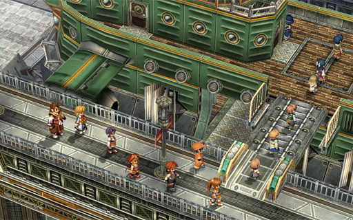
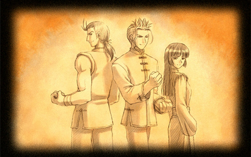
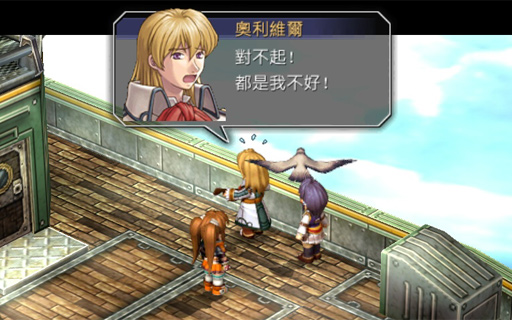
Just like the other chapters, talk to everyone to finish the airship part.
At the Grancel Bracer Guild, the team finds out that the Bracers have decided to help out the military. But all discussions are to be handled in person, to prevent the Ouroboros from eavesdropping over the telephone system. Elnan believes the military needs the Bracers' help because there is a signing ceremony for the Mutual Non-aggression Treaty next weekend and if the Ouroboros has something planned....
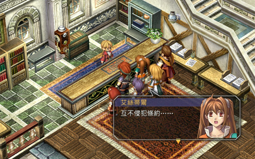
Estelle: Mutual non-aggression Treaty ... what's that?
Kloe: It's an agreement between Liberl, the Erebonian Empire, and the Republic of Calvard. It's goal is to not use war, but dialogue to resolve issues.
The phone rings and the team is sent off to the Erbe Royal Villa to find a missing child, but before then ...
Head for Erbe Royal Villa by going east. The first sidequest is pretty much unavoidable as the monster stands in front of the entrance.
With the monster out of the way, enter Erbe Royal Villa. The butler Raymond will ask you to help him find this missing child. From the entrance hall, take the left exit. You get some interesting dialogue if you search around :P
Enter the first door and Estelle gets to meet Duke Dunan, who is under house arrest for what he did in Trails in the Sky FC. Then go up to the third room to the meeting room where Raymond is and find the missing child behind the counter near the wine bottles.
Return to the Grancel Bracer Build.
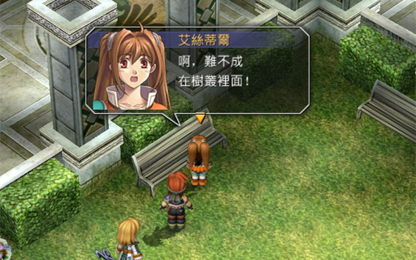
Estelle: Ah, maybe she's in the bushes!
Agate: Hay hay, we're not looking for a real cat
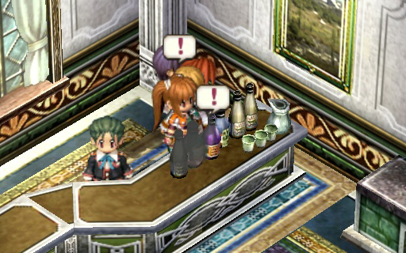
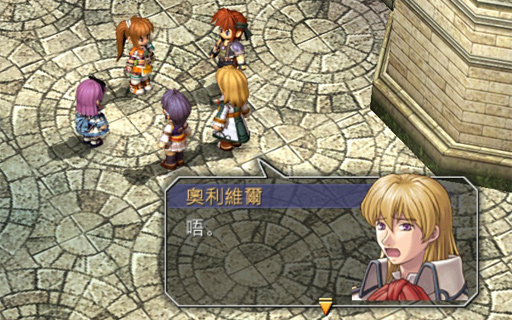
Olivier: huhu~ here little girl, hold my hand, let Olivier escort you to the Bracer Guild
Renne: Thank you for your offer, but Renne would rather have that big sister guide the way
Olivier: Oh D:
Back in Grancel, the other teammates have gathered up as well as Commander Sid. Sid asks the Bracer Guild to help investigate something. Apparently, 9 places in Grancel has received a threatening letter regarding the Mutual Non-aggression Treaty. The team decides to split up to cover more ground.
Your team is now Estelle, Olivier, Zin, and Kloe (since each of them can enter their respective government's building). Head back into the Bracer Guild to accept a new sidequest. Leave and then take the north exit to the Grancel North Block. Here, enter the northwest house and talk to Roki upstairs for a Bamboo Rod.
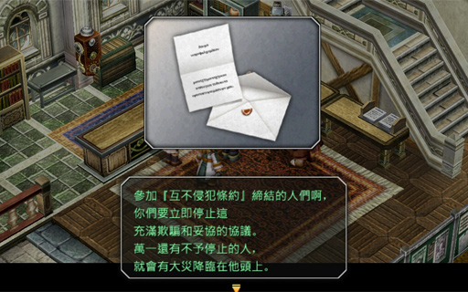
Advice Get the Bamboo Pole to make completing a sidequest in the next chapter easier.
The embassies are at the East block, so take the east exit. If you enter the shopping mall in the middle, you can find Renne and Tita, as well as buy a copy of the Liberl Times #4.
The embassies are located to the north and south of the mall. Start with the embassy for the Erebonian Empire at the north. Head upstairs and talk to the ambassador. When you're done, Mueller will follow the team. DO NOT LEAVE THE EMBASSY YET. Exit the room and enter the library at the left side. Talk to the butler to get a copy of Gambler Jack #4. Exit the embassy.
Next, enter the embassy at the south (unless you already completed the sidequest, then skip this paragraph). Again, head upstairs to talk to the ambassador.
Now, go up to Grancel North Block and take the north exit to the castle. Go up the few steps in the middle stairs and enter the maid's room on the right. The maid says that Hilda is in the information room. Go upstairs, take a left, and enter the room at the end of the hall. Hilda is standing at the bookshelf at the bottom of the stairs.
Now go visit the queen. Exit the room and head right, then right again, then up the staircase at the end of the hallway. In the garden, the queen's building is at the top of the stairs, and you have to go up another flight of stairs to the queen's room.
Leave the castle and go to Grancel West Block.
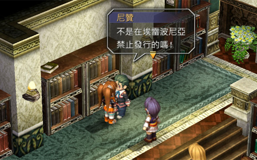
Butler: This ... this book ... wasn't it banned from Erebonia? Who ... who put this kind of stuff in the bookshelf?
Mueller: ........ (angry)
Butler: That's right, you, take this and go!
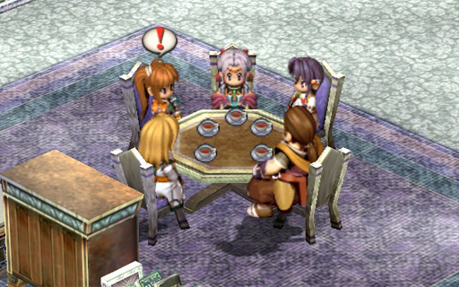
Head to the southwest corner of Grancel West Block, where you can find the Baral Coffee House (green building in the mini-map). Enter it and sample Curry Rice (完熟咖喱飯) $900 and Sleep Defeater (睡魔剋星) $250. Exit and then go behind the Baral Coffee House to complete a sidequest in the Grancel Sewers Western Block.
To the south of the Baral Coffee House is the Liberl News Service building. Go up to the third floor and talk to Nial to ask him about the threatening letters. Nial believes the letters seem to be a prank, but the team isn't so sure.
Oh well, in any case, return to the Grancel Bracer Guild for a scene. It ends with Estelle asking Agate about his investigation into Renne's parents.
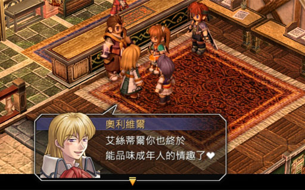
Olivier: Estelle, you can finally appreciate adult stuff ♥
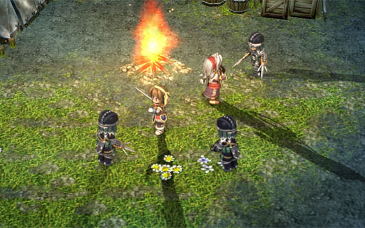
Yes, this is a mandatory battle
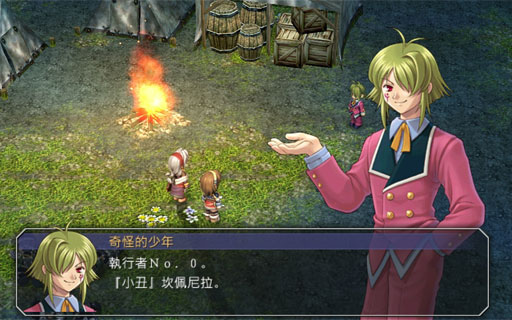
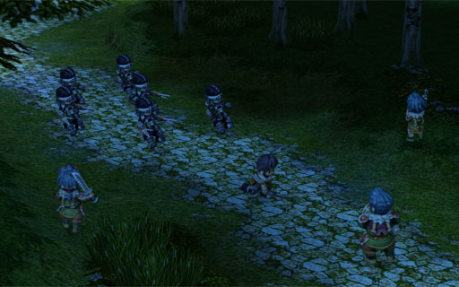
Per the conversation in the Grancel Bracer Guild, Elnan collated the results of everyone's investigation into a report for Estelle to deliver to the miliary in Erbe Royal Villa. Once that is over, head back to Grancel for yet another boring meeting. The meeting is so boring, in fact, that Renne ends up sneaking out when everyone is deep in thought (pay attention during the "..." thought bubble). And then now we have to spend 35 minutes trying to find her again wtf??
Before we start looking for Renne, return to the Bracer Guild to report any sidequest progress to Elnan and to claim another sidequest. We're heading for the sewers again, this time it's the Grancel Sewers East Block.
Tita starts us off with a lead to go to Grancel East Block. Enter the mall to see Renne leave, then go to the Museum to the north. The receptionist says Renne might still be around, so go up to the 3rd floor and then go back down to see her leave ... again!
Note: if you really want, you can go back in the mall to buy a copy of Liberl Times #5.
Since we're at Grancel East Block, this is the perfect opportunity to do the sidequest. Renne can wait a while; serves her right for making us chase her again.
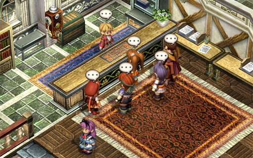
The Museum receptionist gave us a hint to look for "colourless fish". Go to Grancel South Block and enter the building underneath the Bracer Guild (the Fishermans' HQ). The receptionist then gives another hint, the "spicy, bitter, but delicious store".
Go to Baral Coffee House at Grancel West Block. Now the hint is "a place that sells dessert that disappears". Before leaving, talk to the guy eating at the side for Gambler Jack #5. Now go all the way back to Grancel East Block again.
At the left side of Grancel East Block, in between the North/South block exits, there is a raised area. Go up and talk to the maid that runs the ice cream stand. She gives you the last piece of the puzzle. Don't forget to purchase Ultimate Ice Cream (終極冰淇淋) $1200, Royal Ice Cream (皇家冰淇淋) $350, Sunshine Ice Cream (陽光冰淇淋) $600, and Moonlight Ice Cream (月光冰淇淋) $550
Go north to the airport. On the way there, watch the cutscene. You'll soon be seeing more of that engine soon. At the airport, go up and to the right (to where the airships are) and watch another cutscene.
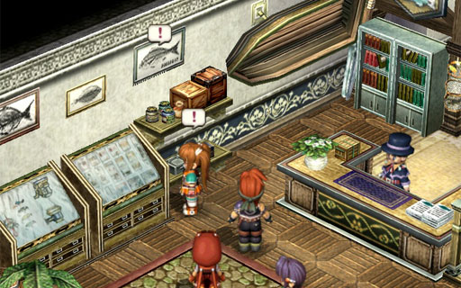
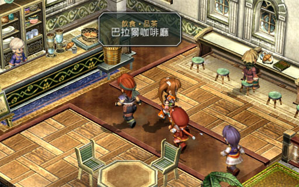
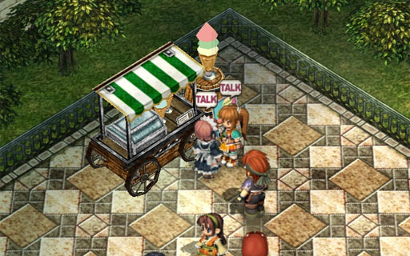
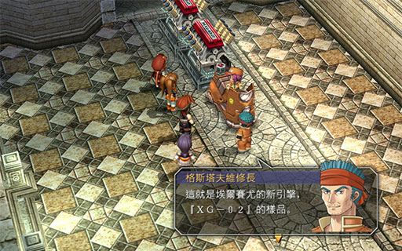
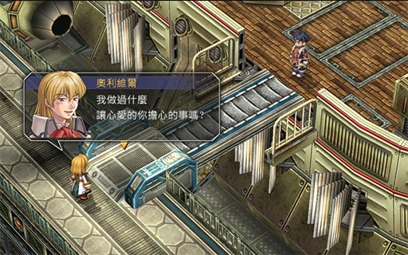
Mueller: Olivier, when I'm gone, try not to get into any trouble
Olivier: Hmph, have I ever done anything to let you worry, my dear?
Mueller: You've in fact done so many things that I don't want to think about it anymore
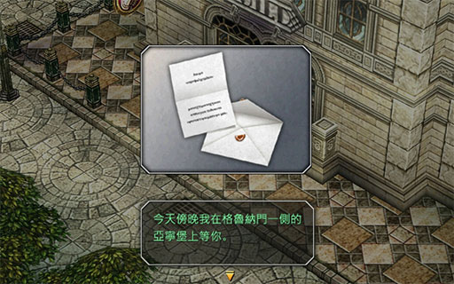
Not spoiling the contents! :P
Estelle, Renne, and team heads back to the Bracer Guild from the airport. Before they enter, Renne hands Estelle a letter that she received from a certain black-hair, amber-eyed person while she was waiting at the airport (i.e. Joshua). Getting her teammate's permission, she run for Gurune Gate.
... sadly, the game doesn't automatically switch scenes. From Grancel entrance, follow the path down. Take the right exit, and then the top fork in the next map.
Enter and go up the stairs immediately under you. Take the first exit (facing bottom-left) once you turn around the corner. On the outer wall, continue going bottom-left until you reach the next map. Save and then continue heading bottom-left and let the cutscene take over. There is a mandatory battle.
Advice Kevin seems to be stronger as a spellcaster. I had good results with him casting Soul Blur and following up with a melee attack from Estelle. This should be enough to kill one of them, but if it isn't, have Estelle use Morale first.
This battle is more annoying than difficult. The seekers are able to cast La Teara which heals in a medium circle, so you should try to keep them spaced out.
You should keep your HP above 1300 as the seekers can cast Dark Matter.
Watch the cutscene after the battle. When you have control again, head downstairs but don't leave Gurune Gate yet. Head south on the hallway and enter the door in front of the guy at the desk. Talk to the cook to buy Sakana: "Shell Meal" (酒餚 甲殼大餐) $1400, Turn Turn Tempura (團團轉天婦羅) $650, Whirlpool Soup (混沌漩渦湯) $650 (and Inland Cuisine: "Pure" (內陸佳餚 粹) $750 if you forgot to in Chapter 2).
Exit Gurune Gate and head back to Grancel. The "tea party" is about to begin.
Night has fallen in Grancel. Phillip, Duke Dunan's butler, finds Estelle and Kevin and tells them the Duke has gone missing. Upon entering the Bracer Guild, Estelle finds everyone in a deep sleep, and a letter on the table. Estelle must attend the "tea party" to rescue Renne and the Duke.
Advice Since Estelle's regular teammate is asleep, the other teammate will join the party temporarily. The shops are still open, so remember to buy them equipment and quartz.
Estelle calls on Sieg to guide them to the tea party. Sieg heads to Grancel West Block. In there, take the northwest exit (west of the Septium Church) to reach Grancel Port. Save up, because you'll be greeted with a forced battle.
Perhaps the easiest forced battle in the whole game. Just focus your attacks on them one at a time.
There are two parts to Grancel Port, but sadly, no treasure.
Right before you leave the first map, there is a building on the right side. Enter for a forced battle.
If possible, spread out the party a bit, as Gunner's attacks deal damage in a medium circle. Additionally, the Dual Claws can also use Shadow Weave (影縫) which can cause AT Delay. There's two of them too, so they should be your priority.
After the battle, one of them reveals that the "Captain" (i.e. Amalthea from Trails in the Sky FC) is behind all this. Estelle also discovers that one of the new prototoype engines have been stolen.
Exit the building ane continue to the next half of the port.
Advice The astute reader will notice that the chapter is drawing to an end, which can only mean fighting the chapter boss. Since the wolves aren't too hard, take this opportunity to farm CP for everyone.
The upcoming boss battle is going to be really long. There are three parts to it, and you don't get any break to heal up or whatnot. You don't need to fully prepare yourself, but it does make the boss easier.
Head north and after the first building, save, then go all the way to the right for a three-part boss battle. Yes, that's right, back-to-back-to-back boss battle. This is probably going to be Estelle's biggest endurance test in the whole series.
Nothing too special, it's basically the same as the previous forced battle but with one more gunner.
The Special Ops soldiers manage to delay Estelle long enough. A powerful impact hits the warehouse door ... then another hit, then finally ... a septium tank!
That's right, a SEPTIUM TANK
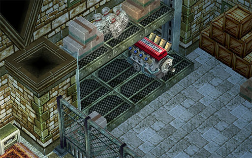
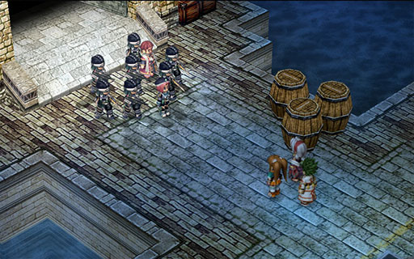
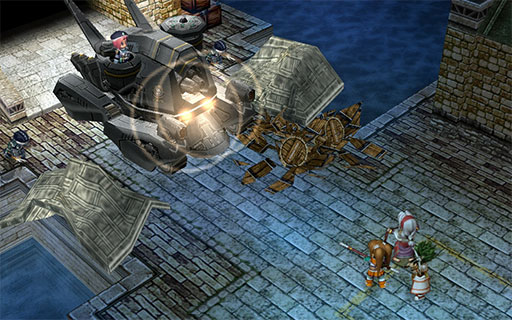
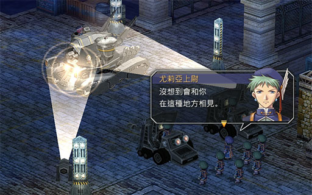
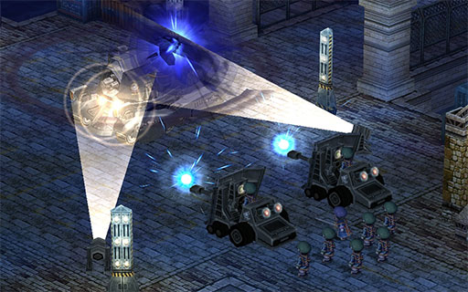
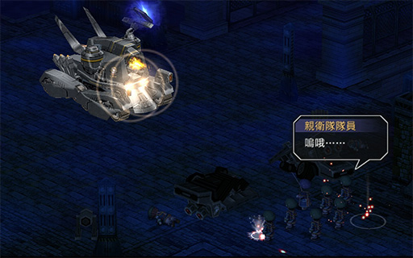
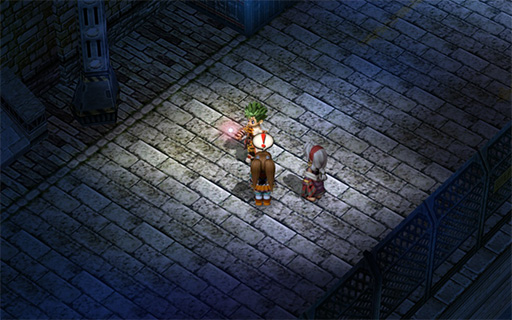
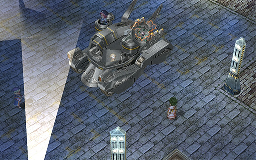
To weave a story from the screenshots. With the power of the Septium Tank, Amalthea intends to blast through the heavy doors of Grancel Palace and force Duke Dunan (who she captured earlier in the chapter) to be king. Midway, she is stopped by Julia Schwarz, leading a small team to stop her.
Julia gives the order to fire, but Amalthea activates her Gospel device which temporarily blocks all Septium power nearby. Julia's artillery is unable to fire, but the Septium Tank is somehow unaffected and pretty much pwns Julia.
Seeing the horribadness of the situation, Kevin tries a last ditch effort and pulls out a staff (one of the sacred treasures). He runs up and hits the tank with the staff, breaking the Gospel device's effect. Julia joins up the team to defeat the boss.
We only get to use Julia for this battle (she becomes a playable character in Trails in the Sky: the 3rd). I really don't have much to say about her. The only purpose she serves is to pretty much give you a 4th teammate to make fighting the boss easier.
Like all bosses, this one is going to take a while. This one might take especially long since: 1. the boss has lots of life, 2. the boss dishes out LOTS OF DAMAGE, 3. the boss has quite strong DEF so physical attacks won't do much, 4. the boss has no elemental weaknesses (so there isn't a particular magic to spam).
The boss has these attacks:
Because most of the boss' attacks can damage lots of characters if they're standing together, it's "obvious" that the strategy is to split everyone up, right?
That might work, but I don't recommend it. I prefer to keep everyone together, especially if you have at least two characters who can cast La Teara since the healing can be done efficiently.
In my playthrough, I didn't follow much of a strategy which is why things took longer than it should. Looking back, this is probably what I would have done:
Keep everyone together for efficient healing. Keep everyone's health up because once the tank starts charging up its Septium Cannon, you most likely won't have enough time to cast a healing spell. Try to use Kevin's S-Break only when absolutely necessary (e.g. everyone is low on health and you can't heal in time).
Since Septium Cannon does so much damage, you can use it to help boost your CP gauge. Just remember to keep your health up if you want to farm Septium Cannon.
Everyone's physical attack won't do much damage (maybe 100-300 damage), so stick with magic (300-700 damage). Since the boss has no elemental weakness, feel free to cast any attack spell except Fire. And definitely choose the spells that targets the enemy and not "the ground" (e.g. some of the line-ranged and circle-ranged spells) because most likely, the boss will move out of the ground target circle.
If you have Scherazard in your team, it's more reason to keep the party members relatively close together so her Heaven's Kiss craft can give AT bonus to everyone.
Have patience, don't rush it, and use S-Breaks to steal as many Critical AT bonuses as possible.
As a bonus, if the boss is running really low on health, consider healing up HP and EP before finishing the boss off. Remember there is a third boss fight immediately afterwards.
With the tank defeated, Amalthea jumps out with a few Special Ops soldiers to have a "fair and square" final battle (how is this at all fair and square?). Without given any time to rest, Estelle is immediately thrown into the third part of the boss fight.
This battle is a bit easier than the tank (since physical attacks do more than 100 damage to Amalthea), but the 3 minions can make this start off a bit difficult (especially if you finished the tank battle in bad shape).
Start off by healing HP and EP. Focus on the Dual Claws first so you don't have to deal with their annoying Shadow Weave skill. The Gunner occasionally uses Machine Gun (機槍速射), but it's just regular damage in a small/medium circle.
At the start, Amalthea is only annoying as her attacks can cause Seal and Poison. Later on, she becomes more dangerout. Her skills include:
This battle is relatively simple. Start by killing off the minions. Steal Critical AT bonuses with S-Breaks and target Amalthea, and stay away from the mines. You should be fine if you keep everyone's HP above 2200, but feel free to use Kevin's S-Break when needed to buy some time to heal.
Having defeated the tank and finding out that Duke Dunan is safe, Estelle's attention turns to Renne. She's not with the Duke and she's not in the tank ... she is, in fact, Legion XV, the Angel of Destruction. Renne sent out all the threatening letters and her "parents" were in fact just dolls as part of the play. After her work here is done, Renne summons her giant mecha Patel Matel and leaves with the Gospel device on the tank.
Note: The "other" player (Agate/Scherazard) permanently joins the party.
If you haven't already, finish off your sidequests. Go back into the Bracer Guild and check out the job board for one last sidequest:
Go back to Grancel. Feel free to restock and upgrade your characters' orbment devices before going to the airport where Nial and Dorothy will meet Estelle to send her off and show her very interesting photograph.
How did Dorothy capture such a photo? Time to find out in Chapter 4!
| Quest/Action | BP | Total |
|---|---|---|
| Main Quest: Find Missing Child | 2 | 7 |
| ... and did not ask for help | +3 | |
| ... correctly deduce Renne could not have entered via surface route | +2 | |
| Main Quest: Investigate Threatening Letters | 3 | 3 |
| Main Quest: Search for Renne | 2 | 5 |
| ... and did not ask Elnan for help | +3 | |
| Main Quest: Tea Party | 4 | 7 |
| ... correctly deduce Joshua's letter is a trap | +3 | |
| Sidequest: Erbe Path Monster | 4 | 4 |
| Sidequest: The Missing Exhibit | 4 | 4 |
| Sidequest: Sewer Monster | 4 | 4 |
| Sidequest: Sewer Monster | 4 | 4 |
| Sidequest: Garden Path Monster | 4 | 4 |
| Total (this chapter) | 42 | |
| Total (cumulative) | 150 | |
Recipes: Hot Seafood Soup (熱海鮮湯), Imitation Handmade Pie (仿手工派), High Mobility Popcorn (高機動爆米花), Agility Crepe (敏捷可麗餅), Mysterious Crepe (神秘可麗餅), Unbelievable Paste (不可思議的糊), Meat with Bone (骨肉相連), Moonlight Ice Cream (月光冰淇淋), Sunshine Ice Cream (陽光冰淇淋), Ultimate Ice Cream (終極冰淇淋), Royal Ice Cream (皇家冰淇淋), Sakana: "Shell Meal" (酒餚 甲殼大餐), Turn Turn Tempura (團團轉天婦羅), Whirlpool Soup (混沌漩渦湯), Inland Cuisine: "Pure" (內陸佳餚 粹)
Books: Liberl Times #4, Liberl Times #5, Gambler Jack #4, Gambler Jack #5

Readers' Comments